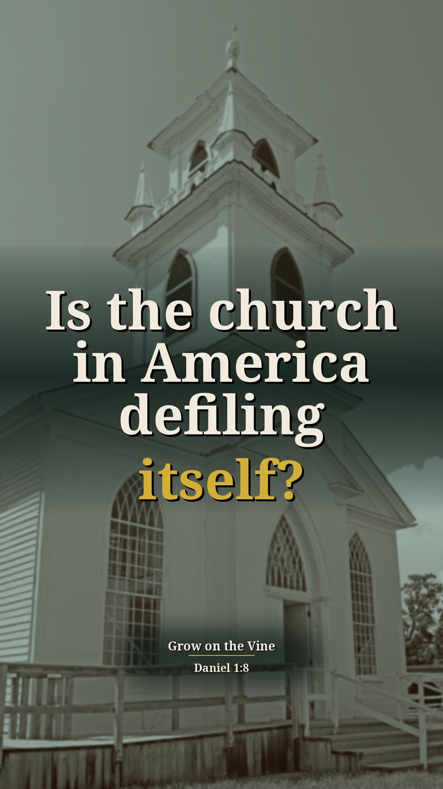
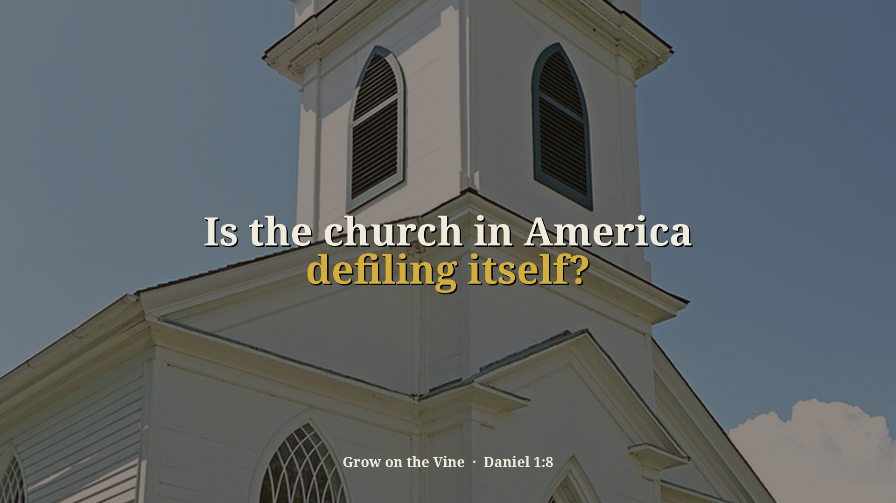
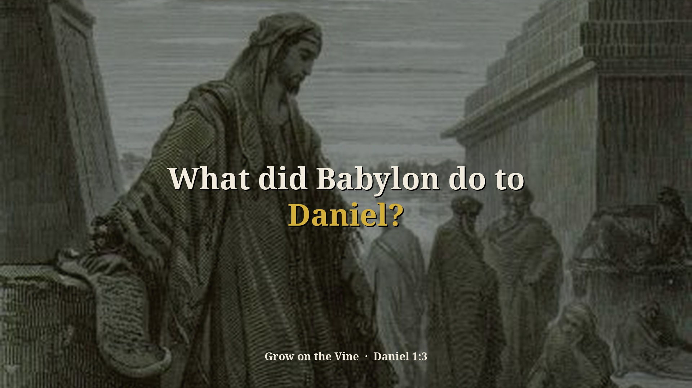

Success in Tragedies Part 1 (Daniel 1) — 4 new context Shorts (preview)
Preview only, not posted anywhere. Source: pNWWSCyAUs0 · Pastor David G. Kincer. New Shorts from passages on sin and other religions that were skipped before. Each one includes the earlier or surrounding part of the sermon that explains why he says it. Each card follows the clip-page order: video → short answer → his words → Scripture (NKJV) → full message.
Is America under siege?
Context included: 4:05–4:20 Jerusalem under Babylonian siege while Daniel grew up (Daniel 1:1) is the picture: America is under siege by philosophies. Merged with 6:09–6:33, where the answer is being on the side of right as the Scriptures define it.
Watch the clip
Our short summary of this clip, not the preacher's exact words
Short answer: He says like Jerusalem under Babylon's siege, America is under siege, not by an army but by philosophies and beliefs destroying our understanding of right and wrong, including a homosexual voice undermining the Scriptures. We have to be on the side of right, which only the God who gave the Scriptures defines.
Why: Daniel 1:1: Babylon besieged Jerusalem. He applies it to America under siege by ideas.
“America is under siege. Not by an army right now. But by philosophies.”
▶ 4:26
“In America now, 2% of the population are homosexuals and they have a very powerful voice destroying the Bible, the scriptures, and undermining them in America.”
▶ 4:44
“See, it's not what they say, it's are they on the side of right or not?”
▶ 6:09
“And the only way to really know you're on the side of right is a God who gave us the scriptures of what is right and what is wrong.”
▶ 6:22
Daniel 1:1 In the third year of the reign of Jehoiakim king of Judah, Nebuchadnezzar king of Babylon came to Jerusalem and besieged it.
Isaiah 5:20 Woe to those who call evil good, and good evil; Who put darkness for light, and light for darkness; Who put bitter for sweet, and sweet for bitter!
Full sermon: Success in Tragedies Part 1 (Daniel 1) — full message page
Other title options:
- How do we know what's right?
- What side are you on?
YouTube description (draft)
Is America under siege? Read the short answer, the Scripture (NKJV) and the pastor's own words: https://growonthevine.com/clips/is-america-under-siege/ To see the full message, click here: https://www.youtube.com/watch?v=pNWWSCyAUs0&t=245s He says like Jerusalem under Babylon's siege, America is under siege, not by an army but by philosophies and beliefs destroying our understanding of right and wrong, including a homosexual voice undermining the Scriptures. We have to be on the side of right, which only the God who gave the Scriptures defines. Daniel 1:1 (NKJV) Pastor David G. Kincer · Grow on the Vine Music: "Crinoline Dreams" Kevin MacLeod (incompetech.com) Licensed under Creative Commons: By Attribution 4.0 License http://creativecommons.org/licenses/by/4.0/ #Shorts #Bible #Jesus
Why is the Bible under attack?
Context included: 4:26–4:47 "America is under siege... by philosophies, by beliefs of different groups of people and destroying our understanding of right and wrong", merged in front so the list of groups has its reason.
Watch the clip
Our short summary of this clip, not the preacher's exact words
Short answer: He says America is under siege by beliefs destroying right and wrong: atheists team up with homosexuals, socialists and hedonists to destroy the Bible; evolution has no proof; pro-choice says whatever you choose is right. But the Bible says choose this day whom you will serve. And many who say they're Christians drink, curse, divorce and live in sexual promiscuity.
Why: Joshua 24:15: choose for yourselves this day whom you will serve.
“Then you got the atheist who team up with the homosexuals and the socialists and the hedonists to destroy the Bible, to destroy Christ.”
▶ 6:34
“Then you got evolution science, which has no proof, no evidence whatsoever.”
▶ 6:43
“But they all gang up to the undermine the Bible and Jesus Christ, the pro-choice people.”
▶ 7:28
“They stay home, they they drink, they smoke, they curse, they divorce, they live in sexual promiscuousness”
▶ 8:23
Joshua 24:15 And if it seems evil to you to serve the LORD, choose for yourselves this day whom you will serve, whether the gods which your fathers served that were on the other side of the River, or the gods of the Amorites, in whose land you dwell. But as for me and my house, we will serve the LORD.”
Full sermon: Success in Tragedies Part 1 (Daniel 1) — full message page
Other title options:
- Is there proof of evolution?
- Are they really Christians?
YouTube description (draft)
Why is the Bible under attack? Read the short answer, the Scripture (NKJV) and the pastor's own words: https://growonthevine.com/clips/who-is-ganging-up-on-the-bible/ To see the full message, click here: https://www.youtube.com/watch?v=pNWWSCyAUs0&t=266s He says America is under siege by beliefs destroying right and wrong: atheists team up with homosexuals, socialists and hedonists to destroy the Bible; evolution has no proof; pro-choice says whatever you choose is right. But the Bible says choose this day whom you will serve. And many who say they're Christians drink, curse, divorce and live in sexual promiscuity. Joshua 24:15 (NKJV) Pastor David G. Kincer · Grow on the Vine Music: "Faith In Tomorrow" by Sascha Ende, licensed under CC BY 4.0 (https://creativecommons.org/licenses/by/4.0/) #Shorts #Bible #Jesus
Is the church in America defiling itself?
Context included: 12:20–12:56 most Americans say they believe in God and call themselves Catholic or Protestant, yet barely 52% voted marriage is between a man and a woman. Daniel 1:8, Daniel refusing to defile himself, is the sermon text behind "defiling itself."
Watch the clip
Our short summary of this clip, not the preacher's exact words
Short answer: He says most Americans say they believe in God and are Christians, yet barely 52% voted that marriage is between a man and a woman. The church is defiling itself; you can't preach on TV or radio that homosexuality is wrong, can't pray in Jesus' name publicly, and leaders say "God bless America" but are scared of the name of Jesus.
Why: Daniel 1:8: Daniel purposed not to defile himself.
“Between Catholics and Protestants say they're Christians in America, and yet 52% voted a Bible truth that a marriage is between a man and a woman.”
▶ 12:41
“The church in America is defiling itself by not following the things of God.”
▶ 13:05
“You can't preach on TV or radio that homosexuality is wrong.”
▶ 13:13
“They're scared to death of the name of Jesus”
▶ 13:39
Daniel 1:8 But Daniel purposed in his heart that he would not defile himself with the portion of the king’s delicacies, nor with the wine which he drank; therefore he requested of the chief of the eunuchs that he might not defile himself.
Acts 4:12 Nor is there salvation in any other, for there is no other name under heaven given among men by which we must be saved.”
Full sermon: Success in Tragedies Part 1 (Daniel 1) — full message page


Other title options:
- Why are leaders afraid of the name of Jesus?
- What did the marriage vote reveal?
YouTube description (draft)
Is the church in America defiling itself? Read the short answer, the Scripture (NKJV) and the pastor's own words: https://growonthevine.com/clips/why-cant-preachers-say-its-wrong/ To see the full message, click here: https://www.youtube.com/watch?v=pNWWSCyAUs0&t=740s He says most Americans say they believe in God and are Christians, yet barely 52% voted that marriage is between a man and a woman. The church is defiling itself; you can't preach on TV or radio that homosexuality is wrong, can't pray in Jesus' name publicly, and leaders say "God bless America" but are scared of the name of Jesus. Daniel 1:8 (NKJV) Pastor David G. Kincer · Grow on the Vine Music: "Wholesome" Kevin MacLeod (incompetech.com) Licensed under Creative Commons: By Attribution 4.0 License http://creativecommons.org/licenses/by/4.0/ #Shorts #Bible #Jesus
What did Babylon do to Daniel?
Context included: 16:25–16:45 what a eunuch is and that Daniel was made one in captivity (Daniel 1:3) is the comparison he draws to pressure on young people in schools today.
Watch the clip
Our short summary of this clip, not the preacher's exact words
Short answer: He says Daniel wasn't only taken captive and made a slave; he was made a eunuch, forced to change his sexual nature. He asks if that is happening in America, and says yes: homosexuals have gotten into public schools pressuring young people to accept homosexuality and transvestitism as an acceptable lifestyle. We're under attack.
Why: Daniel 1:3: Daniel was among the young men put under the master of the eunuchs in Babylon.
“Now, not only was Daniel led away captive, made a slave, he was made a eunuch.”
▶ 16:45
“He was forced to change his sexual orientation.”
▶ 17:01
“Has the homosexuals gotten into the public schools and pressuring our young people to accept homosexuality, transvestitism”
▶ 17:15
“You see, we're under attack.”
▶ 17:31
Daniel 1:3 Then the king instructed Ashpenaz, the master of his eunuchs, to bring some of the children of Israel and some of the king’s descendants and some of the nobles,
Full sermon: Success in Tragedies Part 1 (Daniel 1) — full message page

Other title options:
- Is our youth being changed like Daniel was?
- What tragedies is America facing?
YouTube description (draft)
What did Babylon do to Daniel? Read the short answer, the Scripture (NKJV) and the pastor's own words: https://growonthevine.com/clips/what-was-done-to-daniel/ To see the full message, click here: https://www.youtube.com/watch?v=pNWWSCyAUs0&t=985s He says Daniel wasn't only taken captive and made a slave; he was made a eunuch, forced to change his sexual nature. He asks if that is happening in America, and says yes: homosexuals have gotten into public schools pressuring young people to accept homosexuality and transvestitism as an acceptable lifestyle. We're under attack. Daniel 1:3 (NKJV) Pastor David G. Kincer · Grow on the Vine Music: "Sapphire Isle" Kevin MacLeod (incompetech.com) Licensed under Creative Commons: By Attribution 4.0 License http://creativecommons.org/licenses/by/4.0/ #Shorts #Bible #Jesus